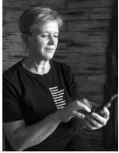

Клепча НинаМобильный телефон Электронная почта Возраст Проживание Зарплатные ожидания Гражданство Языки Занятость График работы |
Тестировщик ПО (Junior)+ 375 29 604 69 38 nina.voronich@gmail.com 60 лет (13.03.1961) г. Кличев, Могилёвская обл. Республика Беларусь, готова к переезду - (г.Минск) 1 300 бел.руб. РБ Белорусский - (родной); Русский - свободно владею; Aнглийский, немецкий - базовые знания полная занятость Полный день |
 |
| Период работы | Должность, место работы | Обязанности |
|---|---|---|
| февраль 2021-июнь 2021 | Курсы Яндекс Практикум, инженер по тестированию; |
|
с декабря 2019 года | Временно не работаю; |
| июнь 2018 -декабрь 2019 | Колбчанский сельисполком, Кличевского района, Могилёвской области ,управляющий делами; | работа “с обращениями граждан”, с входящей и исходящей документацией; работа с программами: “ЗАГС”, “Паспортный стол”, “Похозяйственный учёт”,“Военный учёт”; |
| апрель 2011 - сентябрь 2017 | управляющий делами Несятского сельисполкома |
2008 -2019 |
| сентябрь 2008 - апрель 2011 | Несятский сельисполком, Кличевского района, Могилёвской области, управляющий делами, | работа “с обращениями граждан”, с входящей и исходящей документацией; работа с программами: “ЗАГС”, “Паспортный стол”, “Похозяйственный учёт”, “Военный учёт”, |
| апрель 2002 - сентябрь 2008 | Представительство Белгосстраха по Кличевскому району, страховой агент | обязательное и добровольное страхование граждан. |
| ноябрь 1993 – апрель 2002 | временно не работала | домохозяйка |
| 1985 -ноябрь 1993 | Закутская восьмилетняя школа, учитель химии и биологии | работа с учащимися |
Высшее: г. Витебск, Витебский ветеринарный институт, зооинженер, 1978-1983
Слушаю: Ляпис Трубецкой, ДДТ, Кино, Брутто; Нравится вязать спицами и крючком. Читать книги, особенно детективы. Люблю цветы, выращивать и когда мне их дарят
Стараюсь следовать правилу "лучшее время узнать что-то новое - сегодня". Считаю что менять свою жизнь никогда не поздно, а быть в курсе всего, чем живёт современность так же необходимо, как есть и спать. Иногда это бывает непросто, но это не повод опускать руки. Начатое довожу до конца